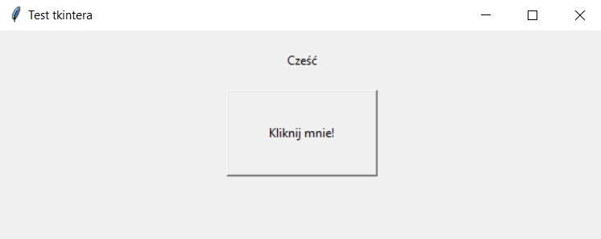

Aby zaimportować bibliotekę potrzebujesz na początku programu dodać import nazwa_biblioteki w tym przypadku importujemy bibliotekę o nazwie time. ☇
Importowanie biblioteki powiększa nasze możliwości. A z modułem time można zrobić np. to: Program prosi nas o podanie za ile ma powiedzieć cześć. Używamy w tym przypadku modułu time.sleep() W nawiasach podajemy czas w sekundach. ☇
Ten program drukuje nam co 1 sekundę cyfrę. Podajemy czas i liczy nam od 1 do podanego czasu. Dlaczego dodajemy do x+1? Po to, żeby program nam liczył od 1 a nie od zera. ☇
Tkinter jest do tworzenia aplikacji okienkowych dzięki tkinterowi można zrobić kalkulator. Obok przypisujemy do root okno tkintera, aby się łatwiej odwoływać. Ustawiamy tytuł i wielkość okna. I odpalamy okno w nieskończoność ostatnim polecenim.
Po utworzeniu okna można dodać np. dowolny tekst, przycisk, obraz lub pole tekstowe. Przykładowo dodajemy tekst.
Tak wygląda okno z tekstem.
To jest program który po kliknięcu przycisku wydrukuje nam Cześć. Tworzy okno potem przycisk o danych wymiarach i funkcję którą ma wywołać podczas kliknięcia. W tym przpadku jest to write. Wcześniej stworzyliśmy miejsce na tekst na początku jest pusty ale w funkcji go uzupełniamy.
Rezultat ->
Stwórz program, który za każdym kliknięciem w przycisk doda do zmiennej dwa i wydrukuje ją w oknie tkintera.